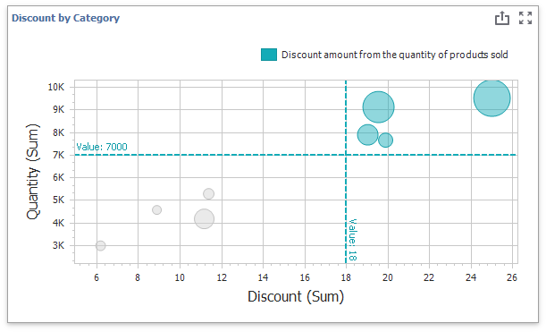
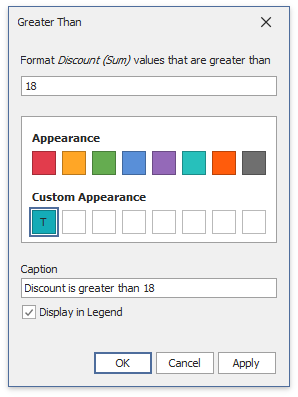
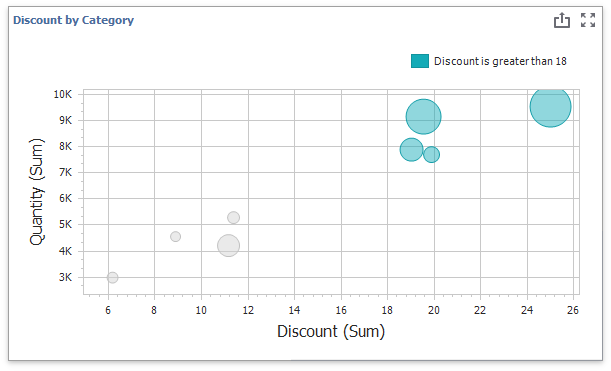
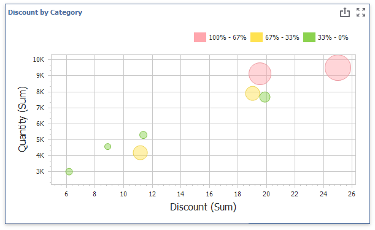
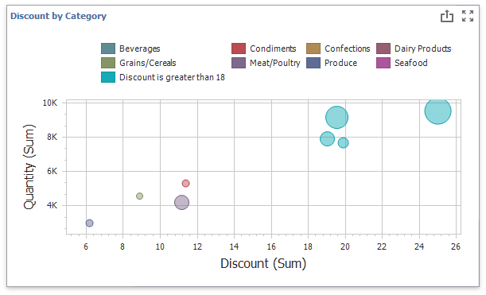

Conditional Formatting
Use conditional formatting to highlight points in a Scatter Chart dashboard item.

Supported Format Rules
You can use the following data in rule calculations:
- measures from the X and Y axis sections
- measures from the Weight section
- dimensions from the Arguments section
- hidden measures
The following list contains available format rules and corresponding data types:
- numeric
- string
- Value (with a condition type set to Equal To, Not Equal To or Text that Contains)
- Expression
- date-time
- Value
- A Date Occurring (for dimensions with a continuous date-time group interval)
- Expression
- Color Ranges
- Gradient Ranges
Create and Edit a Format Rule
You can create and edit format rules in the following ways:
Click the Edit Rules button on the Home ribbon tab.
Click the measure/dimension menu button in the Data Item's pane and select Add Format Rule/Edit Rules.
Refer to the following topic for information on how to create and edit format rules: Conditional Formatting Common.
Format Condition Settings Specific to Scatter Charts
Specify appearance settings and set the condition's value to create a format rule. Available settings depend on the selected format condition type.
The image below displays the Greater Than dialog (a Value format condition applied to a scatter chart). The condition colors bubbles if their values exceed 18.

If you enable Display in Legend, the chart shows information about the applied rule. Set the Caption field to specify the legend's text. The image below displays the Scatter Chart item with the applied Greater Than format rule. The Display in Legend option is activated and the rule's caption is displayed in the legend:

For Range format rules, the legend display text is generated automatically and depends on the range intervals:

Coloring
A Scatter Chart item paints elements in pale gray if they do not meet the applied format condition. Note that this does not apply to elements that use the Hue color mode.
Select the Color by Hue option in a Data item's pane to restore the color scheme.

Tip
Documentation: Scatter Chart - Coloring